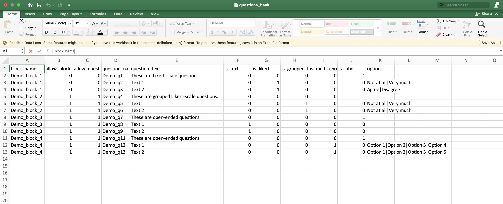
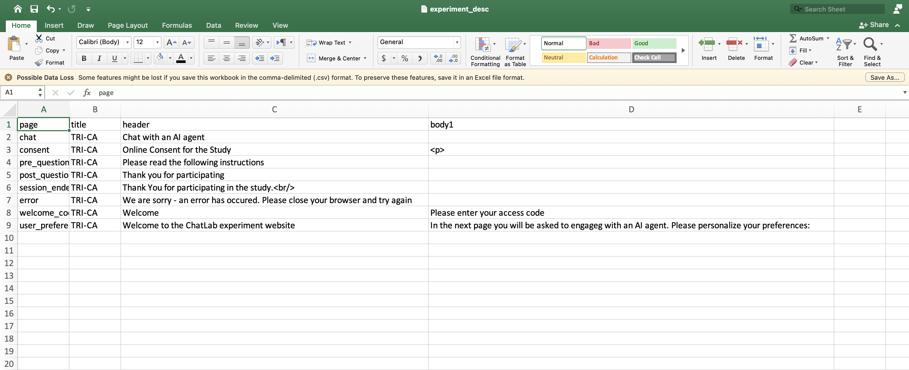
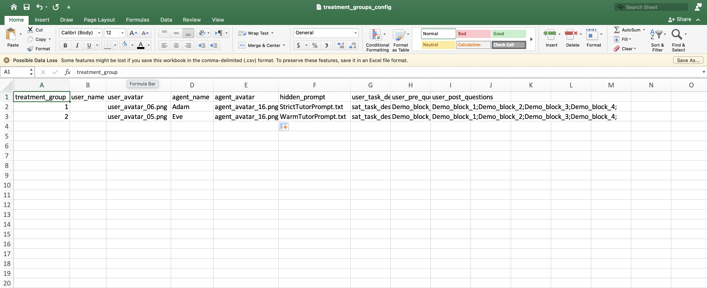
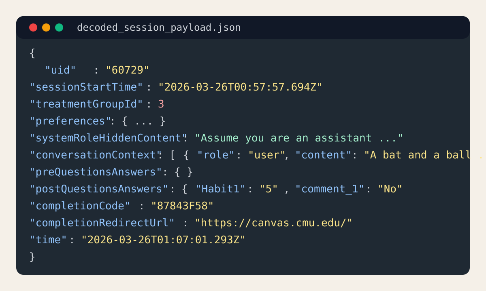

Introduction
Purpose & Functionality
Read more...
TRI-CA is a web-based research platform for running controlled studies of human-AI interaction. It combines participant onboarding, informed consent, pre-task questionnaires, a configurable chat task, post-task questionnaires, and structured result storage in one workflow.
The platform is built with Node.js and Express and is configured primarily through CSV files plus prompt and task-description files. Researchers can deploy a standard study without changing the JavaScript code, while still having the option to customize the interface and backend when needed.
Key Research Capabilities
Read more...
- Hidden Prompt Control: Researchers can dynamically control AI system instructions that remain invisible to participants, enabling manipulation of AI personality, behavior, or capabilities across experimental conditions.
- Treatment-Group-Specific Flow: Each treatment group can point to its own hidden prompt, task description, pre-questionnaire blocks, and post-questionnaire blocks, allowing researchers to define condition-specific study flows without rewriting the application.
- Questionnaire Configuration: Researchers can define pre- and post-interaction questionnaires using configurable blocks, question types, and permutation settings to measure baseline characteristics and outcome variables.
- Complex Experimental Designs: Treatment-group configuration supports factorial and multi-condition designs such as 2x2 or 2x2x2 studies, as long as the required groups are represented in the treatment CSV.
Key Features & Contributions
Read more...
1. Complete Experimental Workflow
- Participant Onboarding and Verification: Code-based authentication with database validation
- Informed Consent: Digital consent collection with opt-out handling (IRB)
- Pre-Study Questionnaires: Configurable baseline measurements/questionnaires
- AI Chat Interface: Real-time interaction with LLMs (default to OpenAI GPT models)
- Post-Study Assessment: Comprehensive outcome measurements/questionnaires
- Session Completion: Automated collection and storage of all questionnaire responses and complete conversation logs with precise interaction timing
2. Experiment Configuration Via Treatment Groups
- Configurable Conditions: CSV-driven experimental design
- Balanced Assignment: Uniform randomization and assignment to treatment groups
- Session Independence: Each participant session is independent with its own state management and assigned treatment group
- Independent Experiment Configuration Per Group: Control over questions, task description, hidden prompts, user preferences, etc. per treatment group
- Question Bank: Question bank to configure pre/post questionnaires with various question types and randomization rules
- Hidden Prompt Bank: Centralized management of hidden prompt files for different treatment groups
- User Task Bank: Centralized management of task description files for participants
3. Flexible Question Framework
- Dynamic Questionnaires: CSV-configured question banks
- Multiple Question Types: Text, Likert scales, multiple choice, labels
- Block Randomization: Randomizable question groups
- Grouped Likert: Efficient matrix-style rating scales
- HTML Support: Rich text formatting for experiment instructions and questions via HTML in CSV configuration
4. Platform Integrations
- Prolific Compatibility: Seamless integration with Prolific Academic (saving prolific_pid)
- OpenAI API: Real-time GPT-4o chat completions model (the model is configurable via environment variable)
- Database Backed Storage: Full experiment control and data collection via 2 PostgreSQL tables
- Codes Table: For participant code validation
- Data Collection Table: JSON-format storage of each participant's complete session data, including questionnaire responses, conversation logs, timestamps, and metadata
- Temporal Tracking: Interaction timing and session duration measurement
- Optional Base64 Encoding: Saved session payloads can be Base64-encoded when explicitly enabled via environment variable.
5. Data Collection Capabilities
- Interaction Logs: Complete conversation histories with timing
- Questionnaire Responses: Structured pre-study and post-study answers keyed by question name
- Attitudinal Assessments: Likert scales and open-ended responses
- Participant Demographics: Background characteristics and preferences
- Technical Metadata: Session identifiers, timestamps, treatment group, and other context that researchers can use in downstream quantitative or qualitative analysis
6. Supported Study Types
- Conversational AI Evaluation: User experience with different AI personalities
- Prompt Engineering Research: Effects of different system instructions
- Human-AI Collaboration: Task performance with AI assistance
- Trust and Anthropomorphism: Perception studies with varied AI presentations
- Intervention Studies: Before/after measurements with AI interactions
Getting Started
1. Installation & Local Smoke Test
Read more...
Start by cloning the public repository and installing the Node.js dependencies:
git clone https://github.com/ProfNaama/TRI-CA.git
cd TRI-CA
npm install
For a first local smoke test, you do not need PostgreSQL or a real OpenAI key.
The application can run with the reusable access code tri-ca and a
fake assistant reply:
REUSABLE_CODE=tri-ca \
FAKE_LLM_RESPONSE="This is a fake TRI-CA response for local testing." \
RESULTS_FILE=/tmp/results.txt \
node app.js
Then open http://localhost:3030, enter the reusable code
tri-ca,
and walk through the complete participant flow. This is the fastest way to verify
that your local configuration works before connecting external services.
2. Configuring the Experiment
Read more...
TRI-CA studies are configured primarily through files in the
experiment_configuration/ directory. The three core CSV files are:
- Question bank: questions_bank.csv
- Experiment text: experiment_desc.csv
- Treatment groups: treatment_groups_config.csv
Additional file banks support prompts and task descriptions:
hidden_prompts_bank/stores hidden prompt text files referenced by the treatment configuration.user_tasks_bank/stores task-description HTML files shown on the chat page.
Below is a practical description of each configuration area.
2.1 Question Bank CSV
This file contains all questionnaire items. Each row defines a question or label,
its question type, and the block to which it belongs. Treatment groups reference
questionnaire blocks through the user_pre_questions and
user_post_questions columns.

Supported question types in the default UI are text input, single-item Likert, grouped Likert, single-select multiple choice, and label/instruction rows.
2.2 Experiment Description CSV
This file controls selected page-level text such as the page title, header, and body copy for pages like the welcome screen, consent screen, questionnaires, chat, and completion page. It does not control every visible UI element; for example, some button labels, radio options, and the initial chat greeting remain hardcoded in the Pug templates or client-side scripts.

2.3 Treatment Group Configuration CSV
This file defines the treatment groups, the displayed user and agent names, avatar files, hidden prompt files, task-description files, and the questionnaire blocks that should be shown before and after the chat task.

In the app, each new session receives a random UID, and the treatment group is assigned by taking that UID modulo the number of available treatment groups. The practical outcome is a balanced distribution of sessions across configured groups over time.
2.4 Hidden Prompt Bank
Each hidden prompt is a plain-text file. The prompt selected for the assigned treatment group is injected as the system message for the LLM conversation and is never shown to the participant.
2.5 User Task Bank
Task descriptions are HTML fragments displayed above the chat interface. This is the main place to provide participant instructions, examples, task constraints, or links relevant to the study.
2.6 Prerequisites and Access Codes
The pre_requisites/ folder does not store participant codes directly.
Instead, it includes the PostgreSQL schema file and a helper script for generating
codes that you can insert into the codes table for a specific experiment.
3. Configuring LLM Access
Read more...
TRI-CA currently includes built-in support for OpenAI chat completions. For a live
study, set OPENAI_API_KEY to a valid API key. You can also adjust the
model and output length with OPENAI_MODEL and
OPENAI_TOKEN_LIMIT.
Recommended workflow:
- Create or log in to an OpenAI account.
- Generate an API key through the OpenAI dashboard.
- Set
OPENAI_API_KEYin the environment where the server runs. - Optionally set
OPENAI_MODELandOPENAI_TOKEN_LIMIT.
For local testing, you can skip real API calls entirely by leaving
OPENAI_API_KEY unset and providing FAKE_LLM_RESPONSE.
This is useful for verifying the experiment flow before you spend tokens or connect
production services.
4. Deployment Options
Read more...
TRI-CA can be deployed anywhere that can run a Node.js web server and expose a public URL. Heroku is one option, but it is not the only one.
- Local machine or lab server: Useful for pilot testing and small internal studies.
- Heroku or other PaaS: Good for straightforward deployment with managed environment variables.
- AWS, Azure, or GCP: Suitable when your institution already uses cloud infrastructure or requires custom networking.
- Container-based hosting: Works if you package the app for Docker or a similar platform.
Regardless of host, you will need Node.js, the required environment variables, and either PostgreSQL or a local results file path. For live studies, run the app as a single server unless you intentionally redesign session handling.
5. Setting Up the Database and Result Storage
Read more...
TRI-CA supports two main result-storage patterns:
- Local file output: Set
RESULTS_FILEand the app will append one JSON line per completed session. This is convenient for local testing and small pilot runs. - PostgreSQL: Set
DATABASE_URLand create the required tables usingpre_requisites/postgres_table.txt. The platform will validate participant codes againsttri_ca_codesand save completed sessions intotri_ca_results.
The code-generation helper in pre_requisites/generate_codes.py can be
used to generate study codes for a specific experiment ID. In production, most
researchers will use PostgreSQL for code validation and persistent result storage.
6. Participant Flow
Read more...
- The participant enters an access code.
- The platform validates the code against the database, unless a reusable local test code is being used.
- The session is initialized and a treatment group is assigned.
- The participant reads and accepts or declines consent.
- Any configured pre-questionnaire blocks are shown.
- The participant completes the chat task using the hidden prompt and task description assigned to that treatment group.
- Any configured post-questionnaire blocks are shown.
- The app saves the completed session and optionally shows a completion code or redirect button.
The app automatically skips stages that are not configured. For example, a blank hidden prompt skips the chat stage, and empty pre- or post-question blocks skip the corresponding questionnaire page.
7. Output Data
Read more...
When RESULTS_FILE is enabled, TRI-CA appends one JSON object per
completed session. The raw saved line is a wrapper object containing
time, uid, userid, and a data
field that holds the session payload.
{"time":"2026-03-26T01:07:01.293Z","uid":"60729","userid":"60729","data":"{...session payload...}"}
If BASE64_ENCODE=1, the data field is Base64-encoded.
Otherwise it is saved as plain JSON text. The image below is based on a decoded
output sample and highlights the kind of fields that are typically available for
analysis.

Common session-payload fields include:
uid: internal session identifier.sessionStartTimeanduserQuestionnaireEndedTime: start and end timestamps.prolificUid: any stored Prolific identifiers from the URL.code: participant access code used for entry.treatmentGroupId: assigned treatment group.preferences: displayed user and agent names and avatar paths.systemRoleHiddenContent: the hidden prompt actually used for the chat.conversationContext: ordered chat turns withrole,content, andinteractionTime.preQuestionsAnswersandpostQuestionsAnswers: questionnaire responses keyed by question name.completionCodeandcompletionRedirectUrl: optional completion outputs shown at the end of the study.consent,chatEnded,finished,lastInteractionTime, anduserid: additional session state and identifiers available in the saved payload.
These fields provide raw material for downstream analysis. Researchers can compute additional variables such as engagement, timing, scale scores, or treatment comparisons after export.
8. Customization Notes
Read more...
8.1 What You Can Change Without Code
- Questionnaire content, grouping, and permutation rules in
questions_bank.csv. - Page titles, headers, and selected body text in
experiment_desc.csv. - Treatment-group assignments, prompts, task descriptions, names, avatars, and questionnaire blocks in
treatment_groups_config.csv. - Prompt text in
hidden_prompts_bank/and task instructions inuser_tasks_bank/.
8.2 What Typically Requires Code Edits
- CSS: visual styling changes in
static/stylesheets/style.css. - HTML / Pug views: consent controls, layout structure, and chat UI behavior in
views/*.pug. - Backend JavaScript: routing, saving logic, session behavior, or LLM-provider changes in
app.js,helpers.js, andsessionManagement.js.
8.3 Questionnaire UI Constraints in the Default Interface
- Text questions render as single-line text inputs.
- Multiple-choice questions render as single-select radio buttons.
- Likert and grouped-Likert items render as fixed 7-point scales with left and right endpoint labels.
- Grouped Likert items are combined only when consecutive rows share the same scale options.
- If question randomization is enabled for a block, keep at most one label row in that block.
question_namevalues should be globally unique across the whole question bank.